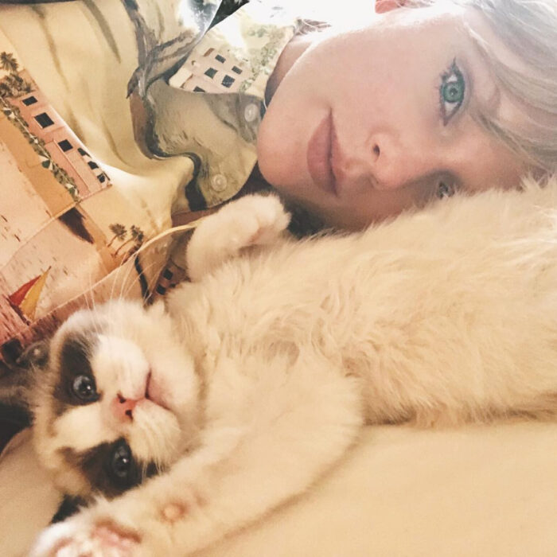

.jpeg)
CHEWPAWS

10 Datos que no sabías
1.- Según el INEGI México es el tercer país de América Latina en maltrato animal.
2.- Según el INEGI México ocupa el primer lugar en perros en situación de calle de América Latina.
3.- El INEGI puntualiza que de los 28 millones de mascotas que hay en el país, el 70% de gatos y perros se encuentran en abandono, esto quiere decir que tan solo 5 millones 400 mil cuentan con un hogar. Mientras que el resto vive en la calle.
4.- Al año cerca de 500 mil perros y gatos son abandonados en México. La PAOT demuestra que siete de cada diez animales de compañía adquiridos como obsequios de Día de Reyes, Navidad o Día del Amor y la Amistad, terminan en azoteas o en las calles antes de llegar al año de vida.
5.- En México hasta 25 millones de perros y gatos viven en situación de calle. Las Asociaciones protectoras de animales estiman que en la capital poblana existen hasta 8 mil perros en situación de calle.
6.- En Puebla, se calcula que al menos 4 de cada 10 perros se convierten en callejeros después de ser abandonados por sus dueños.
7.- El panorama de los perros de la calle no es bueno, en promedio, de cada 10 perros que llegan a los distintos albergues públicos, nueve son sacrificados..
8.- El abandono de mascotas tiene un promedio de crecimiento del 20% anual.
9.- Si todos los perros y gatos que están en situación de calle decidieran reunirse en el Zócalo de la Ciudad de México podrían llenarlo hasta diez veces.
10.- Esto equivaldría a una población de aproximadamente 16 millones 100 mil, apenas 892 mil por debajo de la entidad más poblada del país: el Estado de México. De hecho, si todos los perros y gatos callejeros tuvieran su propio estado, este sería el segundo más poblado de todo México. Evitarás el abandono animal.
ADOPTA NO TE ARREPENTIRÁS
